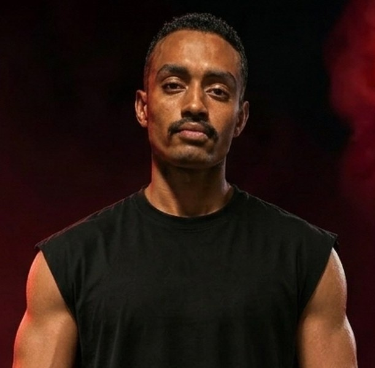

د. محمد الريس
Founder & Medical Fitness Director
وراء كل تحول... منهج
يقود د. محمد الريس رحلة MFT أونلاين بمنهج يجمع بين المعرفة الطبية، وفهم وظائف الجسم، والتدريب الرياضي، والتغذية، بهدف تقديم رؤية متكاملة للتعامل مع رحلة تغيير الجسم وتحسين الأداء ونمط الحياة.
يعتمد منهجه على أن الوصول إلى نتيجة حقيقية لا يبدأ من برنامج جاهز يتم تطبيقه على الجميع، وإنما من فهم الشخص نفسه؛ حالته، أهدافه، نمط حياته، مستوى نشاطه، والتحديات التي يواجهها، ثم بناء خطة تتناسب مع هذه المعطيات ويمكن تطويرها مع مرور الوقت.
منهج قائم على الفهم
يركز د. محمد الريس على فهم العلاقة بين مختلف العوامل التي تؤثر في جسم الإنسان ونتائجه. فالتدريب وحده لا يمثل الصورة كاملة، وكذلك التغذية وحدها لا تكفي لبناء رحلة متكاملة.
لذلك ينظر إلى التغيير من عدة جوانب مترابطة، تبدأ بفهم الاحتياجات والحالة الحالية، ثم تحديد الأهداف، وتصميم التدريب والتغذية، ومتابعة الاستجابة والتقدم، وإجراء التعديلات اللازمة في الوقت المناسب.
الرؤية الطبية
يعتمد د. محمد الريس على المعرفة الطبية وفهم الجوانب المرتبطة بصحة الجسم عند بناء التصور العام للرحلة.
هذه الرؤية تساعد على التعامل مع كل حالة وفق احتياجاتها وظروفها، مع مراعاة المعلومات الصحية ذات الصلة والعوامل التي قد تؤثر على الأداء أو القدرة على الالتزام بالبرنامج.
الهدف هو أن تكون القرارات المتعلقة بالرحلة مبنية على فهم واضح للحالة، وليس على وصفة عامة تصلح للجميع.
فهم وظائف الجسم
يمثل فهم كيفية استجابة الجسم للتدريب والتغذية والنشاط اليومي جزءًا أساسيًا من منهج د. محمد الريس.
يهتم بفهم التكيف مع التدريب، واستجابة الجسم للمجهود، وأهمية الاستشفاء، وتأثير النوم والعادات اليومية والتغذية على الأداء والنتائج.
هذا المنظور يساعد على بناء خطة أكثر واقعية وقابلية للتطور، بدل الاعتماد على حلول مؤقتة أو تغييرات منفصلة عن طبيعة الجسم واحتياجاته.
الرؤية الرياضية
في الجانب الرياضي، يهتم د. محمد الريس ببناء برنامج تدريبي يتناسب مع مستوى الشخص وهدفه وقدرته على التطور.
لا تقتصر الفكرة على أداء مجموعة من التمارين، وإنما تشمل فهم الهدف من التدريب، وتنظيم الأحمال والشدة، وتطوير القوة والعضلات والأداء البدني بصورة تدريجية.
ومع تقدم الشخص، يمكن أن تتغير احتياجاته وقدراته، ولذلك تصبح المتابعة والتعديل جزءًا أساسيًا من العملية التدريبية.
الرؤية الغذائية
يتعامل د. محمد الريس مع التغذية باعتبارها جزءًا أساسيًا من منظومة التحول، وليست مجرد قائمة أطعمة مؤقتة.
يركز على بناء توجه غذائي يتناسب مع احتياجات الشخص وأهدافه وروتينه اليومي، مع مراعاة قدرته على الالتزام بالخطة والاستمرار عليها.
الفكرة ليست الوصول إلى نظام مثالي على الورق، وإنما الوصول إلى نظام واقعي يمكن تطبيقه داخل الحياة اليومية والاستمرار عليه مع الوقت.
المتابعة والتطور
يرى د. محمد الريس أن وضع الخطة هو بداية الرحلة وليس نهايتها.
من خلال المتابعة أونلاين، يمكن تقييم التقدم، وملاحظة التغيرات، وفهم استجابة الجسم، وتحديد الجوانب التي تحتاج إلى تطوير أو تعديل.
ومع تغير الظروف والأهداف ومستوى الأداء، يمكن تطوير المسار بما يتناسب مع المرحلة الجديدة، بحيث تظل الخطة مرتبطة بالشخص وليست منفصلة عنه.
فلسفة د. محمد الريس
تقوم فلسفة د. محمد الريس على أن تغيير الجسم عملية تحتاج إلى فهم وصبر واستمرارية، وليست مجرد نتيجة سريعة يتم الوصول إليها من خلال حل مؤقت.
لذلك يجمع منهجه بين الفهم الطبي، علم وظائف الأعضاء، التدريب الرياضي، التغذية، والمتابعة لبناء تجربة أكثر تنظيمًا ووعيًا، تساعد الشخص على فهم ما يفعله ولماذا يفعله، وكيف يمكنه الاستمرار في التطور.
بالنسبة لد. محمد الريس، النجاح لا يرتبط فقط بالنتيجة التي تظهر في نهاية الرحلة، وإنما بالمنهج الذي يساعد الشخص على بناء تغيير يمكنه الاستمرار معه وتحويله إلى جزء من أسلوب حياته.